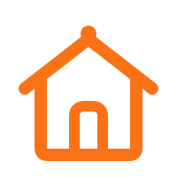
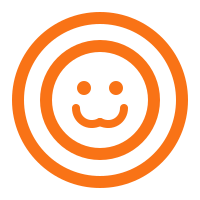
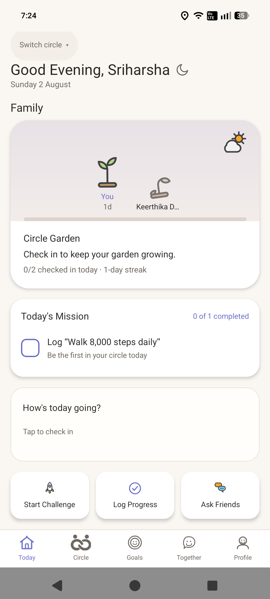
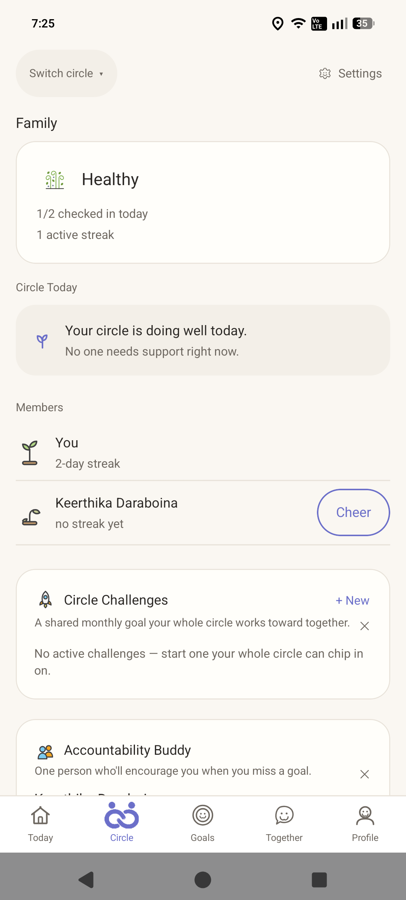
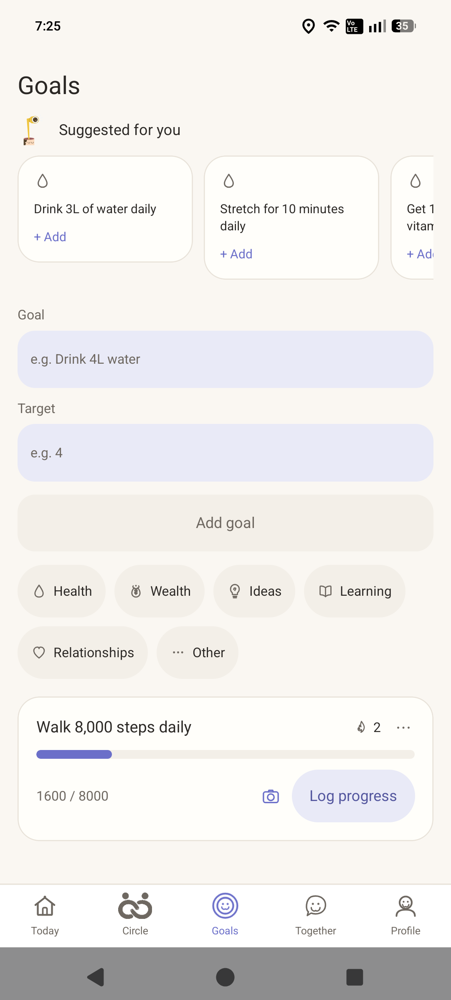
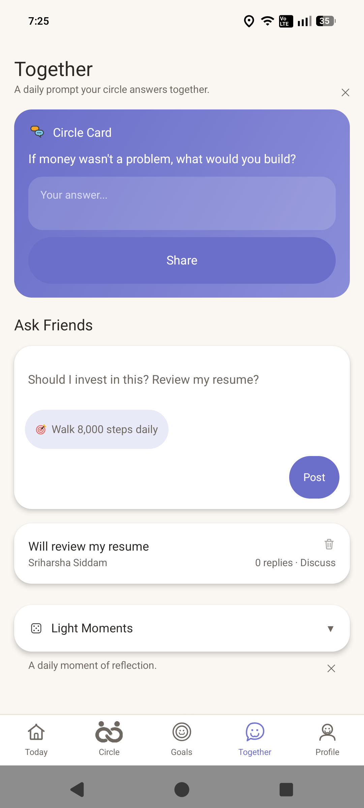
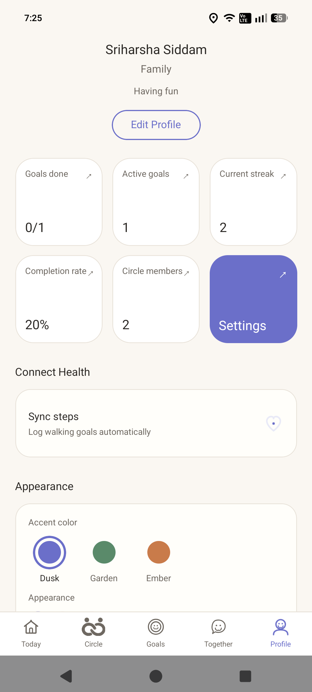

Growth doesn't happen alone.
Kinly is a small, private space for you and 2–10 friends — a Growth Circle — to check in, chase goals, and grow together. No feeds, no strangers, no performing.
What it is
A private circle, built for accountability that actually feels good.
Pick the friends who'll notice if you go quiet. Set goals across whatever you're working on — health, wealth, ideas, learning, relationships — and log progress in one tap. Everyone in the circle sees each other's momentum, not a highlight reel.
How it works
One loop, every day.
Start a circle
Invite 2–10 friends you actually trust into a private Growth Circle.
Set your goals
Pick what you're working on — health, wealth, ideas, learning, or relationships.
Log progress
Check in and answer the circle's daily prompt — a minute or two, most days.
Watch it grow
See your circle's momentum — streaks, gardens, and activity, all in one place.
Show up for them
Nudge a streak, check in on someone who's gone quiet, start a challenge together.
Screens
Five places, one loop.
Everything in Kinly feeds the same idea: show up, log something real, see how your circle is doing.

Today
Your one clear answer to "what should I do right now" — a greeting, your circle's health at a glance, today's goals to check off, and what your circle's been up to.
Circle
Every member's garden, side by side. Pair up with an accountability buddy and take on challenges together.

Goals
Set a target, log progress, keep the streak alive. Suggestions are tailored to what you actually care about.
Connection
One daily prompt for the whole circle, answers hidden until you post your own — plus a couple of two-minute games for lighter days.
Profile
Your streaks, your badges, your story — a running tally of what you've completed and a reflection on who you're becoming.
Nudges
One-tap cheers when a friend's on a streak or gone quiet — a small push, never a lecture.
See it
What it actually looks like.





The signature mechanic
Every goal plants something.
Kinly turns consistency into something you can actually see. Log a goal and your garden moves forward. Go quiet, and it wilts — no lectures, just a plant that notices.
Get the app
Join the beta.
Kinly is in active testing on Android right now — an iOS beta will follow once that's sorted out.
Join the Beta — AndroidTakes about a minute. Android only for now.
Tap "Join the Beta" and download the APK.
Open the downloaded file from your notifications.
Allow installs from this source when Android asks.
Open Kinly and join your circle.
Built with